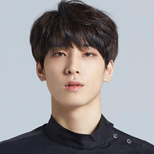
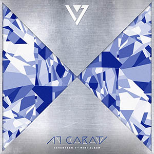

Seventeen (Hangul: 세븐틴; ditulis sebagai SEVENTEEN atau SVT) adalah sebuah boy band asal Korea Selatan yang dibentuk oleh Pledis Entertainment.
Grup yang terdiri dari 13 anggota ini dibagi berdasarkan spesialisasi keahlian masing-masing ke dalam 3 sub-unit; hip-hop unit, vocal unit, dan performance unit. Kata "seventeen" yang berarti "tujuh belas" merupakan gabungan dari jumlah keseluruhan anggota mereka, jumlah sub-unit, dan angka 1 yang berarti "kesatuan tim".Grup ini dikenal dengan sebutan Self-producing idol karena keterlibatan anggotanya dalam penyusunan, pengembangan, dan pembuatan lagu serta koreografi.
Grup ini memiliki nama fandom yaitu Carat, merupakan inspirasi dari lagu merek 'Shining Diamonds' jadi bagi grup, Carat adalah berlian mereka. Karena itulah mereka Seventeen dikenal dengan lambang berlian.
Cubic merupakan nama fandom untuk penggemar Going SEVENTEEN. Going SEVENTEEN adalah reality show oleh member SEVENTEEN yang tayang di saluran youtube resmi SEVENTEEN. Bahkan julukan penggemar Going SEVENTEEN “Cubic” ini diakui oleh Pledis Entertainment selaku agensi SEVENTEEN
| Foto | Nama Asli | Nama Panggilan/Panggung | Posisi | Tempat, Tanggal Lahir | Instragram |
|---|---|---|---|---|---|
| Choi Seung Cheol (최승철) | S.Coups (에스.쿱스) | Hip-Hop Team (Leader), SVT Leaders | Deagu, 8 Agustus 1995 (28) | sound_of_coups | |
| Yoon Jeong Han (윤정한) | Jeonghan (정한) | Vokalis Utama, Tim Vokal | Seoul, 4 Oktober 1995 (28) | jeonghaniyoo_n | |
| Joshua Hong / Hong Jisoo (홍지수) | Joshua (조슈아) | Lead Vocalist, Tim Vokal | Los Angeles, 30 Desember 1995 (28) | joshu_acoustic | |
| Wen Junhui (文 俊辉) | Jun (준) | Main Dancer, Sub Vokalis, Performance Team | Shenzhen, 10 Juni 1996 (27) | junhui_moon | |
| Kwon Soonyoung (권순영) | Hoshi (호시) | Leader Tim Performance, Penari Utama, Vokalis Utama, SVT Leader, BOOSEOKSOON | Namyangju-si, 15 Juni 1996 (27) | ho5hi_kwon | |
|  | Jeon Wonwoo (전원우) | Wonwoo (원우) | Rapper Utama, Tim Hip-hop | Changwon, 17 Juli 1996 (27) | everyone_woo |
| Lee Jihoon (이지훈) | Woozi (우지) | Produser, Tim Vokal (Leader), SVT Leaders | Busan, 22 November 1996 (27) | woozi_universefactory | |
| Lee Seokmin (이석민) | DK (도겸) | Tim Vokal, BOOSEOKSOON (Leader) | Suji-gu, 18 Febuary 1997 (26) | dk_is_dokyeom | |
| Kim Mingyu (김민규) | Mingyu (민규) | Lead rapper, face of the group, Tim Hip-Hop | Anyang, 6 April 1997 (26) | min9yu_k | |

|
Xu Minghao (徐明浩) | THE8 (디 에잇) | Penari Utama, Sub Vokalis, Sub Rapper, Tim Performance | Anshan, 7 November 1997 (26) | xuminghao_o |
| Boo Seung Kwan (부승관) | Seungkwan (승관) | Vokalis Utama, Wajah Kelompok, Tim Vokal, BOOSEOKSOON | Busan, 16 Januari 1998 (25) | pledis_boos | |

|
Hansol Vernon Chwe/Choi Hansol (최 한솔) | Vernon (버논) | Rapper Utama, Tim Hip-Hop | New York, 18 Febuari 1998 (24) | vernonline |

|
Lee Chan (이찬) | Dino (디노) | Penari Utama, Sub Rapper, Maknae, Tim Performance | Iksan-si, 11 Febuari 1999 (23) | feat.dino |
| Digital Cover | Nama Album | Deskripsi | Tanggal Rilis |
|---|---|---|---|
|  | 17 CARAT | 17 Carat adalah album mini debut dari Seventeen. Album ini dirilis oleh Pledis Entertainment dan didistribusikan oleh LOEN Entertainment. "Adore U" menjadi singel utama untuk album mini ini. | 29 Mei 2015 |
| BOYS BE |
Boys Be adalah album mini kedua dari Seventeen. Album ini dirilis oleh Pledis Entertainment. Album ini terdiri dari lima lagu, termasuk singel utama, "Mansae".
Album mini ini terjual sebanyak 169,833+ kopi di Korea Selatan. Album ini menduduki peringkat 2 pada Korean Gaon Chart dan peringkat 1 pada US World Billboard Chart. |
10 September 2015 | |
| LOVE & LETTER |
Love & Letter, juga dikenal sebagai First Love & Letter, adalah album studio pertama dari Seventeen. Album ini merupakan lanjutan dari dua album mini grup ini, 17 Carat dan Boys Be (2015).
Album ini berisi 10 lagu dan berfokus pada tema-tema seperti pengalaman cinta pertama. "Pretty U" dipilih menjadi judul lagu dari album dan dibawakan di beberapa acara musik oleh grup tersebut selama dua setengah bulan berikutnya. Selama periode ini, grup meraih dua kemenangan pertama berturut-turut di Show Champion. Kemenangan pertama mereka pada 4 Mei 2016, diikuti kemenangan kedua pada 11 Mei 2016. Beberapa lagu di album ini merupakan versi khusus dari lagu-lagu yang sebelumnya dirilis oleh grup tersebut, tetapi dinyanyikan oleh ketiga tim yang membentuk grup tersebut masing-masing. |
29 April 2016 | |

|
GOING SEVENTEEN |
Going Seventeen adalah album mini ketiga dari Seventeen. Album ini dirilis oleh Pledis Entertainment. Album ini terdiri dari delapan lagu, termasuk singel utama, "Boom Boom".
Album mini ini terjual sebanyak 269,866+ kopi di Korea Selatan. Album ini menduduki peringkat 1 pada Korean Gaon Chart and number 3 on the US World Billboard Chart. |
5 Desember 2016 |

|
Al1 (Alone) | Al1 adalah album mini keempat dari Seventeen. Album mini ini dirilis oleh Pledis Entertainment. Album ini berisi delapan lagu, termasuk singel utama "Don't Wanna Cry". | 22 Mei 2017 |
| TEEN, AGE | Teen, Age (ditulis sebagai TEEN, AGE) adalah album studio kedua dari Seventeen. Album ini dirilis oleh Pledis Entertainment dengan singel utama "Clap". | 6 November 2017 | |

|
DIRECTOR'S CUT | Album Teen, Age kemudian dirilis ulang sebagai album spesial pertama Seventeen yang berjudul, Director's Cut dengan singel utama "Thanks". | 5 Februari 2018 |
| YOU MAKE MY DAY | You Make My Day adalah album mini kelima (keenam secara keseluruhan) oleh Seventeen. Album ini dirilis oleh Pledis Entertainment. Album ini terdiri dari enam lagu, termasuk singel "Oh My!". | 16 Juli 2018 | |
| YOU MADE MY DAWN | You Made My Dawn adalah album mini keenam (ketujuh secara keseluruhan) oleh grup vokal pria asal Korea Selatan Seventeen. Album ini dirilis pada tanggal , melalui Pledis Entertainment. Album ini memulai debut di peringkat atas pada Gaon Album Chart, Oricon Albums Chart dan pada peringkat empat di tangga lagu Billboard World Albums Amerika Serikat. | 21 Januari 2019 | |
| AN ODE | An Ode adalah album studio ketiga dari Seventeen. Album ini dirilis melalui Pledis Entertainment. Album ini memulai debut di peringkat atas Gaon Album Chart, dan pada peringkat atas di Oricon Albums Chart Jepang dalam minggu ketiga. Album ini juga mencapai peringkat tujuh pada tangga lagu Billboard World Albums Amerika Serikat. An Ode terjual sebanyak 822,265 eksemplar di Korea Selatan pada September 2019 (including 26,131 copies of the Kihno edition). | 16 September 2019 | |
| HENG:GARAE (헹가래) | Heng:garæ (헹가래) adalah album mini ketujuh dari Seventeen. Album ini dirilis oleh Pledis Entertainment. Album ini terdiri dari enam lagu, termasuk singel "My My" dan "Left & Right". | 22 Juni 2020 | |
| SEMICOLON | Semicolon adalah album mini spesial dari Seventeen. Album ini dirilis melalui Pledis Entertainment empat bulan setelah pendahulunya, Heng:garæ (2020). | 19 Oktober 2020 | |
| YOUR CHOICE | Your Choice adalah album mini kedelapan dari Seventeen, dirilis melalui Pledis Entertainment delapan bulan setelah pendahulunya, Semicolon (2020). Album ini terdiri dari enam lagu yang terdiri dari berbagai genre, termasuk singel utama, "Ready to Love". Secara keseluruhan, album ini sebagian besar memiliki suara yang tenang, menggambarkan sifat cinta. | 18 Juni 2021 | |
| ATTACCA | Attacca adalah album mini kesembilan dari Seventeen dirilis oleh Pledis Entertainment, album mini ini terdiri dari tujuh lagu termasuk singel "Rock with You". | 22 Oktober 2021 | |
| FACE THE SUN | Face the Sun adalah album studio keempat dari Seventeen. Album ini akan dirilis oleh Pledis Entertainment melalui YG Plus. Album ini terdiri dari sembilan lagu, dengan "Hot" menjadi singel utama. Lagu pertama, "Darl+ing", di pra-rilis pada tanggal 15 April 2022. | 27 Mei 2022 | |
| FML | FML adalah album mini kesepuluh dan ketigabelas secara keseluruhan dari Seventeen, dirilis oleh Pledis Entertainment dengan "F*ck My Life" dan "Super" sebagai singel utama ganda dari album mini ini. FML adalah album pra-pemesanan terbanyak kedua dalam sejarah Korea Selatan dengan 4.64 juta salinan. | 24 April 2023 | |
| WE MAKE YOU | We Make You adalah mini album Jepang debut SEVENTEEN. Ini dirilis dengan "Call Call Call!" berfungsi sebagai lagu utama. | 30 Mei 2018 | |
| Happy Ending | Happy Ending merupakan single Jepang dari lagu Korea mereka yang bertajuk "oh My!" dan "Healing". | 29 Mei 2019 | |
| 24H | 24H adalah album mini berbahasa Jepang kedua dari grup vokal pria Korea Selatan Seventeen. Album ini dirilis melalui Pledis Japan. Dengan album ini, Seventeen adalah grup ketiga yang mencapai peringkat pertama di Oricon Weekly Album Chart dengan empat album berturut-turut. | 9 September 2020 | |
| DREAM | Dream adalah album mini berbahasa Jepang ketiga dari Seventeen. Album ini dirilis melalui Hybe Labels Japan. Album ini berisikan satu lagu asli, "Dream", versi bahasa Jepang dari dua lagu yang aslinya dirilis dalam bahasa Korea, "Rock with You" dan "All My Love", dan versi "holiday" dari lagu bahasa Inggris "Darling". Album ini dipasarkan sebagai album mini berbahasa Jepang "pertama" dari grup ini meskipun Seventeen memiliki dua rekaman sebelumnya dua album mini berbahasa Jepang, We Make You dan 24H, yang secara resmi diklasifikasikan sebagai "album mini". | 9 November 2022 | |
| Love & Letter (Repackage) | Love & Letter Repackage Album adalah album repackage pertama SEVENTEEN. Album tersebut berisi semua lagu mereka dari Love & Letter dan lima lagu EP. Album ini dirilis dengan "Very Nice" sebagai lagu utama. | 4 Juli 2016 | |
| SECTOR 17 (Repackage) | SECTOR 17 merupakan versi kemas ulang atau repackage dari album studio keempat mereka, "Face the Sun". Selain sembilan lagu dari album "Face the Sun", "SECTOR 17" akan memiliki empat lagu baru termasuk "_World", "Fallin' Flower", dan "Cheers". | 27 Mei 2022 | |
| ~ ~ ~ | OST, Feat_STV, dan lainnya. | ~ ~ ~ |
NEXT??!